,
,  ,
,  ,
,  , 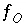
,
, 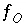
,  ,
,  ,
,  ,
,  , 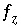
,
, 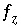
,  ,
,  , and
, and  .
.
Batch-reaction and transport calculations require calculating equilibrium between the aqueous phase and any equilibrium-phase assemblage, surface assemblage, exchanger assemblage, solid-solution assemblage, and gas phase that is defined to be present in a chemical system. Irreversible reactions that occur prior to equilibration include mixing, specified stoichiometric reactions, kinetic reactions, and temperature change. The complete set of Newton-Raphson equations that can be included in batch-reaction and transport calculations contains
,
,
,
, 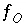
,
,
,
,
, 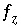
,
,
, and
.
Equations for mole balance on hydrogen  , activity of water
, activity of water  , mole balance on oxygen
, mole balance on oxygen  , charge balance
, charge balance  , and ionic strength
, and ionic strength  are always included and are associated with the master unknowns
are always included and are associated with the master unknowns  ,
,  , 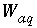
(mass of water),
, 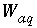
(mass of water),  , and
, and  , which are always included as master unknowns.
, which are always included as master unknowns.
Mole-balance equations  are included for total concentrations of elements, not individual valence states or combinations of individual valence states. A mole-balance equation for alkalinity can not be included; it is used only in initial solution calculations.
are included for total concentrations of elements, not individual valence states or combinations of individual valence states. A mole-balance equation for alkalinity can not be included; it is used only in initial solution calculations.
The equation  is included if a fixed-pressure gas phase is specified and is present at equilibrium. The equations
is included if a fixed-pressure gas phase is specified and is present at equilibrium. The equations  are included if an exchange assemblage is specified. The equations 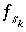
are included if a surface assemblage is specified. In addition,
are included if an exchange assemblage is specified. The equations 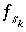
are included if a surface assemblage is specified. In addition,  is included for each surface for which an implicit diffuse-layer calculation is specified or
is included for each surface for which an implicit diffuse-layer calculation is specified or  is included for each surface for which an explicit diffuse-layer calculation is specified. An equation
is included for each surface for which an explicit diffuse-layer calculation is specified. An equation  is included for each pure phase that is present at equilibrium. An equation
is included for each pure phase that is present at equilibrium. An equation  is included for each component of each solid solution that is present at equilibrium.
is included for each component of each solid solution that is present at equilibrium.
It is not known at the beginning of the calculation whether a pure phase, solid solution, or fixed-pressure gas phase will be present at equilibrium. Thus, at each iteration, the following logic is used to determine which of the equations should be included in the equilibrium calculations. The equation for a phase is included if it has a positive moles, 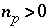
, or if the saturation index is calculated to be greater than the target saturation index. If the equation is not included in the matrix, then all coefficients for the unknown  in the matrix are set to zero.
in the matrix are set to zero.
For an ideal solid solution, the equations  are included if the moles of any of the components are greater
are included if the moles of any of the components are greater
than a small number (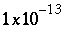
) or if the sum, 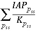
, is greater than 1.0. For an ideal solid solution, 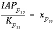
, so the summation determines if the sum of the mole fractions is greater than 1.0. If the equations for a solid solution are not included in the matrix, then all coefficients for the unknowns  in the matrix are set to zero.
in the matrix are set to zero.
For nonideal, binary solid solutions the following procedure to determine whether to include solid-solution equations is developed from the equations of Glynn and Reardon (1990, equations 37 through 48). If the moles of any of the solid-solution components are greater than a small number ( ) then all the equations for the solid solution are included. Otherwise, the aqueous activity fractions of the components are calculated from
) then all the equations for the solid solution are included. Otherwise, the aqueous activity fractions of the components are calculated from
where IAP is the ion activity product for the pure component. Next the mole fractions of the solids that would be in equilibrium with those aqueous activity fractions are determined by solving the following equation for x 1 and x 2 (=1- x 1 ):
where x 1 and x 2 are the mole fractions in the solid phase, K 1 and K 2 are the equilibrium constants for the pure components, 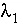 and 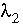 are the activity coefficients of the components as calculated from the Guggenheim parameters for the excess free energy. This equation is highly nonlinear and is solved by first testing subintervals between 0 and 1 to find one that contains the mole fraction of component 1 that satisfies the equation and then interval halving to refine the estimate of the mole fraction. Once the mole fractions of the solid have been determined, two values of the "total activity product" (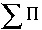 ) are calculated as follows:
If 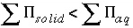
, then the equations for the solid solution are included, otherwise, the equations are not included. If the equations for a solid solution are not included in the matrix, all coefficients for the unknowns  in the matrix are set to zero.
in the matrix are set to zero.
At each iteration, the equation for the sum of partial pressures of gas components in the gas phase is included for a fixed-pressure gas phase if the moles in the gas phase are greater than a small number (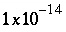 ), or if the sum of the partial pressures of the gas-phase components, as calculated from the activities of aqueous species, is greater than the total pressure. If the equation for the sum of the partial pressures of gas components in the gas phase is not included in the matrix, then all coefficients of the unknown 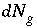 are set to zero.
Equations  ,
,  and
and  are included as optimization equations in the solver. All other equations are included as equality constraints in the solver. In addition, several inequality constraints are included in the solver:
are included as optimization equations in the solver. All other equations are included as equality constraints in the solver. In addition, several inequality constraints are included in the solver:
(1) the value of the residual of an optimization equation 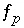 , which is equal to 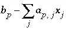 , is constrained to
be nonnegative, which maintains an estimate of saturation or undersaturation for the mineral; (2) the value of the
residual of an optimization equation  , which is equal to 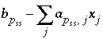
, is constrained to be nonnegative,
, which is equal to 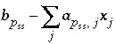
, is constrained to be nonnegative,
which maintains an estimate of saturation or undersaturation for the component of the solid solution; (3) the residual of the optimization equation for  is constrained to be nonnegative, which maintains a nonnegative estimate of the total gas pressure; (4) the decrease in the mass of a pure phase,
is constrained to be nonnegative, which maintains a nonnegative estimate of the total gas pressure; (4) the decrease in the mass of a pure phase,  , is constrained to be less than or equal to the total moles of the phase present,
, is constrained to be less than or equal to the total moles of the phase present,  ; (5) the decrease in the mass of a component of a solid solution, 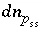
, is constrained to be less than or equal to the total moles of the component present,
; (5) the decrease in the mass of a component of a solid solution, 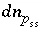
, is constrained to be less than or equal to the total moles of the component present,  ; and (6) the decrease in the moles in the gas phase, 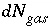
, is constrained to be less than the moles in the gas phase,
; and (6) the decrease in the moles in the gas phase, 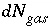
, is constrained to be less than the moles in the gas phase,  .
.
Initial values for the master unknowns for the aqueous phase are taken from the previous distribution of species for the solution. If mixing of two or more solutions is involved, the initial values are the sums of the values in the solutions, weighted by their mixing factor. If exchangers or surfaces have previously been equilibrated with a solution, initial values are taken from the previous equilibration. If they have not been equilibrated with a solution, the estimates of the master unknowns are the same as those used for initial exchange-composition and initial surface-composition calculations. Initial values for the moles of each phase in the pure-phase assemblage, each component in the solid solutions in the solid-solution assemblage, and each gas component in the gas phase are set equal to the input values or the values from the last simulation in which they were saved.
For data input to PHREEQC, definition of batch-reaction and transport calculations rely on many of the data blocks. Initial conditions are defined with SOLUTION or SOLUTION_SPREAD, EXCHANGE, SURFACE, GAS_PHASE, EQUILIBRIUM_PHASES, SOLID_SOLUTIONS, and USE data blocks. Batch reactions are defined by initial conditions and with MIX, KINETICS, REACTION, REACTION_TEMPERATURE, and USE data blocks. Transport calculations are specified with the ADVECTION or the TRANSPORT data block (see "Description of Data Input").
 , (89)
, (89) . (92)
. (92)